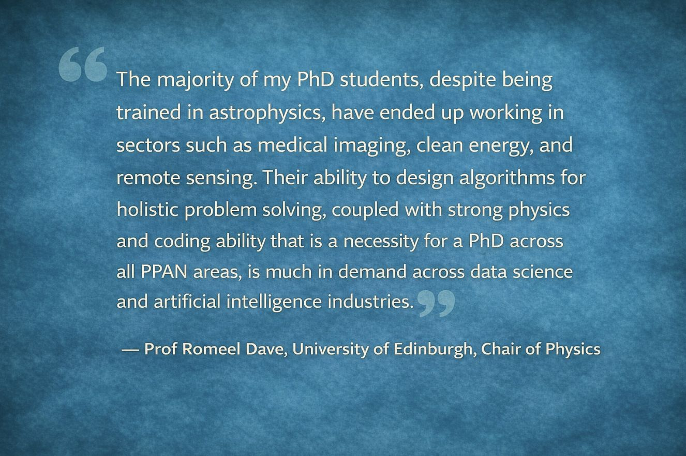
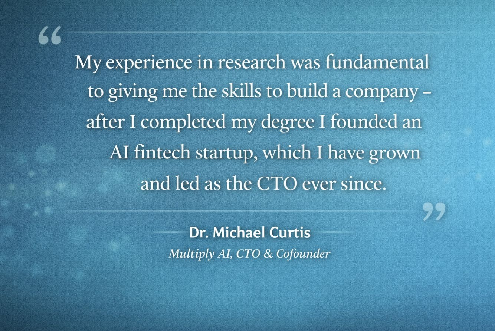
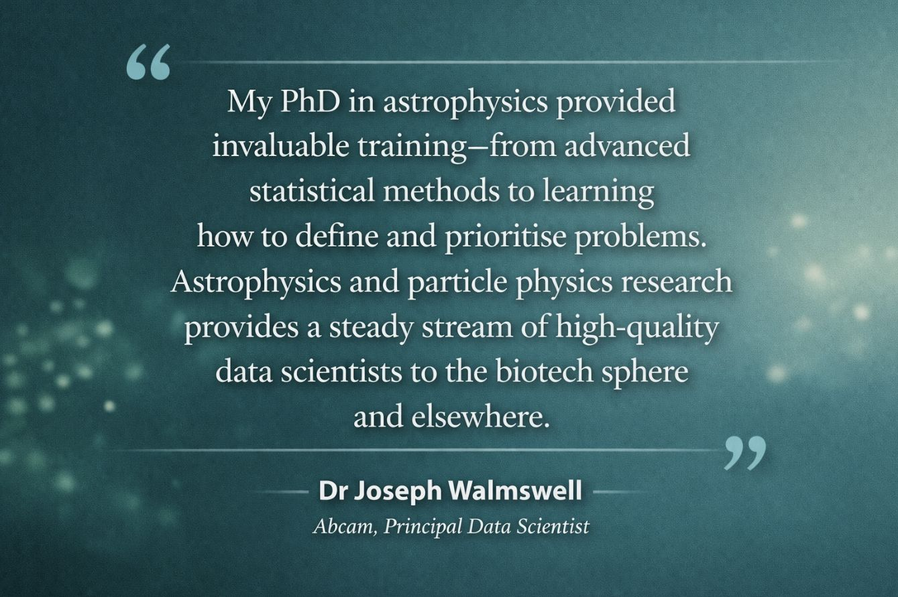

Industry Voices
 Dr Laura Sinclair, St James's Hospital, Senior medical physicist — "I studied nuclear physics at the University of York, and had long-term placements in Jyväskylä and Riken. My training in nuclear physics underpins my work as a medical physicist in a hospital, where I help image and treat patients. Advances in detector development, medical physics, and isotope research all rely on this field and directly improve patient care. Without continued investment in nuclear physics, these life-saving technologies and future innovations would not be possible."
Dr Laura Sinclair, St James's Hospital, Senior medical physicist — "I studied nuclear physics at the University of York, and had long-term placements in Jyväskylä and Riken. My training in nuclear physics underpins my work as a medical physicist in a hospital, where I help image and treat patients. Advances in detector development, medical physics, and isotope research all rely on this field and directly improve patient care. Without continued investment in nuclear physics, these life-saving technologies and future innovations would not be possible."
 Dr Arnab Basu, Kromek Group plc, CEO — "Our detector technology grew out of sustained research in physics over many years. That research capability evolved into radiation detection technology now used in healthcare, defence, nuclear power and security markets."
Dr Arnab Basu, Kromek Group plc, CEO — "Our detector technology grew out of sustained research in physics over many years. That research capability evolved into radiation detection technology now used in healthcare, defence, nuclear power and security markets."
 Dr Sean Benson, Assistant Professor at Amsterdam UMC Assistant Professor, ex Lead Data Scientist at KPMG — "My particle physics PhD and subsequent postdoctoral work have provided growth opportunities and skills that I have been able to apply directly to healthcare and industry."
Dr Sean Benson, Assistant Professor at Amsterdam UMC Assistant Professor, ex Lead Data Scientist at KPMG — "My particle physics PhD and subsequent postdoctoral work have provided growth opportunities and skills that I have been able to apply directly to healthcare and industry."
 Dr Charles Badger, Faculty AI, Data Scientist — "The statistics and programming I developed during my Physics PhD form the foundation of my career as a Data Scientist. The technical and soft skills I gained allowed me to acclimatise quickly to industry, collaborating effectively and communicating clearly across teams and projects.
Dr Charles Badger, Faculty AI, Data Scientist — "The statistics and programming I developed during my Physics PhD form the foundation of my career as a Data Scientist. The technical and soft skills I gained allowed me to acclimatise quickly to industry, collaborating effectively and communicating clearly across teams and projects.
The analytical methods born out of gravitational wave research have far-reaching applications beyond physics - underpinning robust statistical analysis, accelerating computationally intensive tasks, and driving more efficient algorithms and machine learning pipelines. Removing opportunities for others to engage with these cutting-edge ideas would be a mistake not just for UK academic research, but for UK industry's ability to benefit from them too."
 Dr David Evans, FreeAgent, Head of Data Engineering — "I completed a PhD in particle physics in the UK (Bristol), subsequently continued to work in particle physics outside the UK, and am an engineering leader at a technology company in Scotland at present. I have been watching developments in PPAN funding with alarm. This research is important in its own right, and PPAN-trained scientists have enabled us to create industry-leading AI technology at FreeAgent. I have recruited multiple staff members from the PPAN community and have seen first-hand the high impact they have on the development of our product."
Dr David Evans, FreeAgent, Head of Data Engineering — "I completed a PhD in particle physics in the UK (Bristol), subsequently continued to work in particle physics outside the UK, and am an engineering leader at a technology company in Scotland at present. I have been watching developments in PPAN funding with alarm. This research is important in its own right, and PPAN-trained scientists have enabled us to create industry-leading AI technology at FreeAgent. I have recruited multiple staff members from the PPAN community and have seen first-hand the high impact they have on the development of our product."

Prof Romeel Dave, University of Edinburgh, Chair of Physics — "PPAN training provides a much sought-after pipeline for a wide range of cutting-edge industries now being transformed through data science. The majority of my PhD students, despite being trained in astrophysics, have ended up working in sectors such as medical imaging, clean energy, and remote sensing. Their ability to design algorithms for holistic problem solving, coupled with strong physics and coding ability that is a necessity for a PhD across all PPAN areas, is much in demand across data science and artificial intelligence industries. This letter clearly demonstrates the importance of such training to building and retaining a leading technological work force in the UK, and shows that funding blue skies research at the early career level impacts our society in ways far beyond just exciting scientific discoveries."

Dr Michael Curtis, Multiply AI, CTO & Cofounder — "I completed a PhD in Astrophysics, where I benefitted from access to high performance computing across the UK to run simulations of galaxy formation. My experience in research was fundamental to giving me the skills to build a company - after I completed my degree I founded an AI fintech startup, which I have grown and led as the CTO ever since.The skills I developed during my PhD were crucial to my subsequent work. This is true technically - being able to adapt techniques from scientific literature into practical computational solutions and to iterate and develop these has been core to our business - but also culturally. The freedom I had to explore different approaches, the need to deal with failed projects and rework them to something successful and the ability to follow my curiosity to find genuinely new approaches - all of these were made possible not just by the subject I studied but also by the resources that were available to me, to my supervisor and to my peers.
In the UK we have a great base for building new high impact businesses in a large part because we have a world class higher education sector, but only a fraction of that impact is captured in ideas that come directly from the research. Our company has benefitted from many individuals who have studied PPAN subjects at a research level in the UK, as well as from open source technology that they have developed. Curiosity-driven research is critical to what makes these people so useful to industry because it gives them space to develop the ability to think flexibly, and to transfer their skills in problem solving to different domains.
It would be an act of incredible long term sabotage to decimate the PPAN community, and in my view it would represent a fundamental misunderstanding of its importance to the larger economy."

Dr Joseph Walmswell, Abcam, Principal Data Scientist — "I am the Principal Data Scientist at Abcam, one of Britain's largest biotech companies and a leading supplier of life sciences reagents to academia and industry. My PhD in Astrophysics at the University of Cambridge (Institute of Astronomy) provided invaluable training for the work I do. The advanced statistical methodologies I learned have been very useful; just as useful though was learning how to move from the undergraduate mindset of solving problems to the postgraduate mindset of being able to define and prioritise those problems in the first place. More generally, I have observed that astrophysics and particle physics research provides a steady stream of high-quality new data scientists to the biotech sphere and elsewhere."